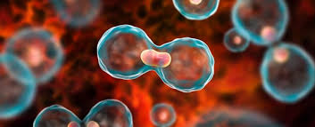

Welcome to our Cancer Awareness page! This page aims to provide information about cancer, its types, and how to reduce the risk of developing it.
Cancer is a disease caused by an uncontrolled division of abnormal cells in a part of the body.
| Type of Cancer | Common Symptoms |
|---|---|
| Lung Cancer | Coughing, chest pain, weight loss. |
| Prostate Cancer | Difficulty urinating, blood in urine. |
| Colorectal Cancer | Change in bowel habits, blood in stool. |
| Skin Cancer | New growths or sores that do not heal. |
For more information, visit the following links:
Read more about cancer prevention and treatment
Cancer research is crucial for improving treatment and finding a cure. Consider supporting cancer research initiatives.
Cancers are caused by a range of factors, however, between 30% and 50% of cancers can be prevented through strategies to reduce behavioural and dietary risk factors.
Tobacco use is responsible for around 22% of cancer deaths. Tobacco is smoked or chewed but is related to many other cancers beyond the lung or mouth. Tobacco contains at least 80 different cancer-causing agents and is a major risk factor for over 20 different types of cancer, cardiovascular and respiratory diseases. Over 80% of the 1.3 billion tobacco users worldwide live in low- and middle-income countries.
Alcohol consumption, even moderate consumption, can increase the risk of at least six types of cancers including bowel (colorectal), breast, mouth, pharynx, and larynx (mouth and throat), oesophageal, liver and stomach. Alcohol is estimated to have caused 4% of all cancer cases in 2020.
Unhealthy diets and nutrition and the food we eat are closely linked to some cancers. There is strong evidence to show that eating processed meats such as ham, bacon, salami, and sausages can cause bowel cancer. While diets high in red meat, salt or sugars are risk factors for some cancers and a range of noncommunicable diseases.
Overweight and obesity, where the body is carrying excess weight, are linked to an increased risk of developing 12 cancers. These include endometrial, breast, ovarian, prostate, liver, gallbladder, kidney, and colon.
Thank you for visiting!